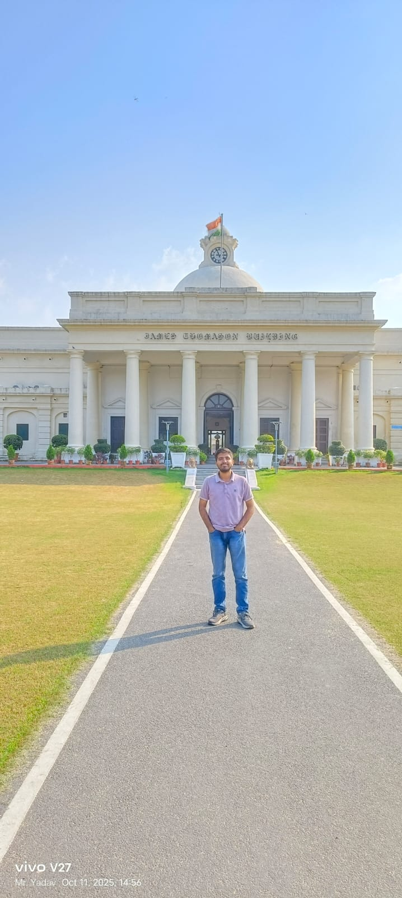
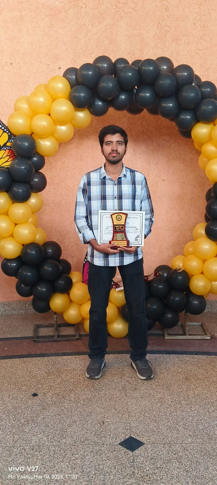
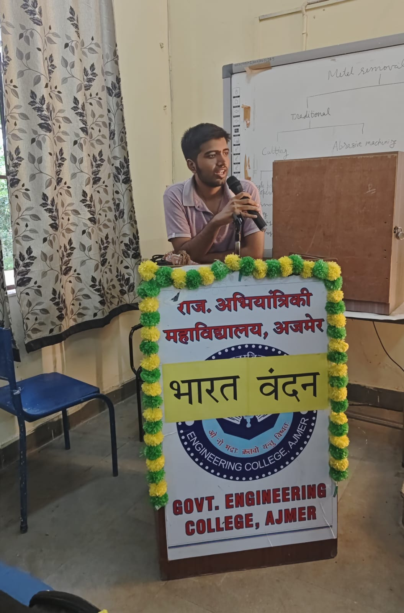
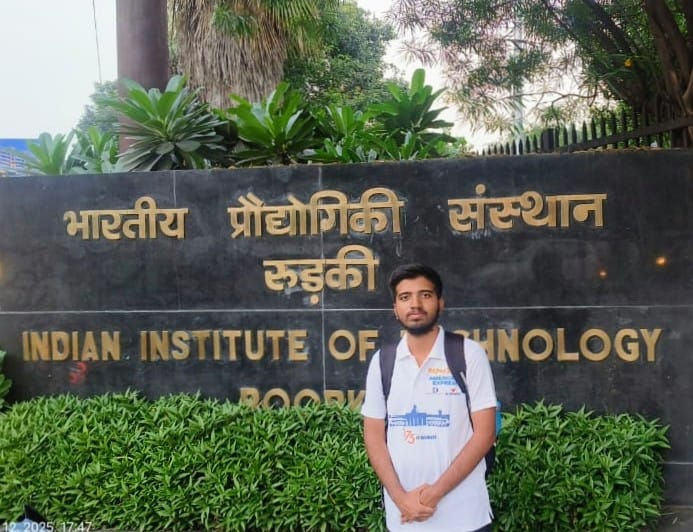
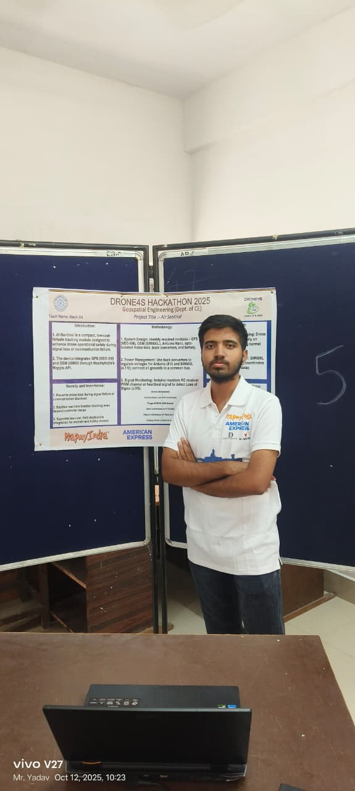
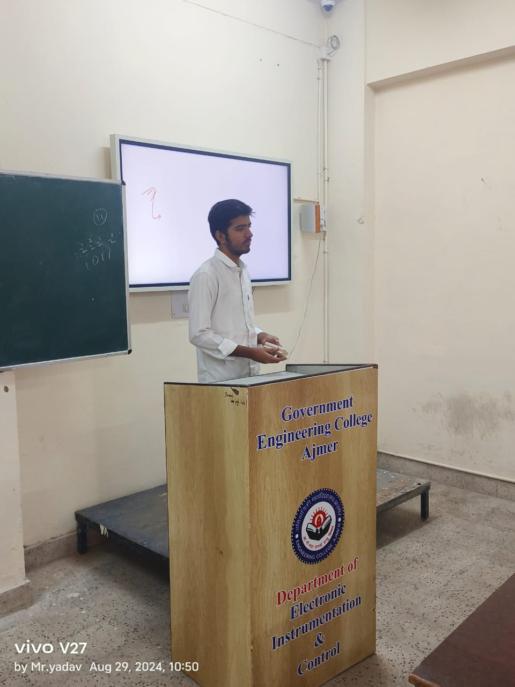

Hello, I'm Rounak
- 🎓 Electronics, Instrumentation & Control Engineering Student
- 💻 Passionate Web Developer
- ⚡ Problem Solver
- 🔌 Electronics & Hardware Project Enthusiast
I am a dedicated B.Tech student in Electronics Instrumentation and Control Engineering at Government Engineering College, Ajmer, affiliated with Bikaner Technical University. I have a strong interest in software development, web technologies, and applying technical knowledge to solve real-world problems.
With a passion for continuous learning, I enjoy exploring new tools, frameworks, and emerging technologies. I believe in building clean, efficient, and practical solutions through code while maintaining a strong foundation in engineering principles.
Alongside my academic journey, I actively work on projects that enhance my problem-solving skills and technical expertise. I am always open to internships, collaborative projects, and opportunities that challenge me to grow both professionally and personally.







1st year Internship

2nd year Intern

Drone4s Hackathon

IIT-B Animation

TPO Certificate
Medical PDMS Sensor Module
Participated in Smart India Hackathon 2025 and developed a Medical PDMS (Polydimethylsiloxane) Sensor Module for non-invasive health monitoring. The flexible sensor detects vital signs like pulse, temperature, and pressure changes. Designed for wearable medical applications with high sensitivity and biocompatibility. Collaborated with a team of 6 members; shortlisted in top 25 teams regionally.


Drone advance GPS/GSM Module
Developed an advanced GPS/GSM module for drones during the Drone4s hackathon at IIT Roorkee. The system enables real-time tracking, geofencing alerts, and long-range communication for autonomous drone operations. Key features include low-power consumption, obstacle avoidance integration, and live telemetry data transmission. Won recognition for innovation in drone navigation technology.


Study Nest time managing and refreshing Website
Created 'Study Nest' – a smart time management and productivity website for students. Features include Pomodoro timer, task scheduler, focus mode with ambient sounds, progress tracking, and daily motivation quotes. Built with HTML, CSS, JavaScript, and localStorage for data persistence. Won 2nd place for best UI/UX and practical student utility.


Civic Sense: Report Issues to Officials
Many civic infrastructure problems such as potholes, damaged roads, and broken public facilities remain unresolved due to inefficient reporting systems and lack of proper communication between citizens and authorities. There is a need for a simple and transparent platform that allows citizens to report issues easily using images or videos with location evidence while ensuring user privacy. This project aims to create a technology-driven solution that connects citizens with authorities and improves the reporting and resolution of civic infrastructure problems.


Portable Environmental Monitoring Device using ESP32
This project is an IoT-based environmental monitoring system built using the ESP32 Development Board and multiple sensors to measure real-time environmental conditions. Sensors like the DHT22 Temperature and Humidity Sensor, BH1750 Light Intensity Sensor, MQ135 Air Quality Sensor, and PMS5003 Particulate Matter Sensor collect data such as temperature, humidity, light intensity, and air pollution levels.The ESP32 processes this data and sends it over Wi-Fi to a web-based dashboard, where users can view live readings on any device like a smartphone or laptop. This eliminates the need for expensive equipment and provides a low-cost, portable, and real-time solution for monitoring environmental conditions.

LOADING...
HELLO WORLD